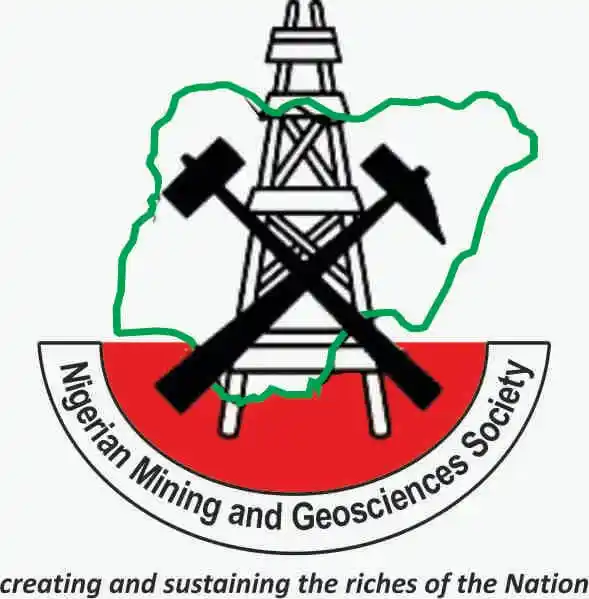
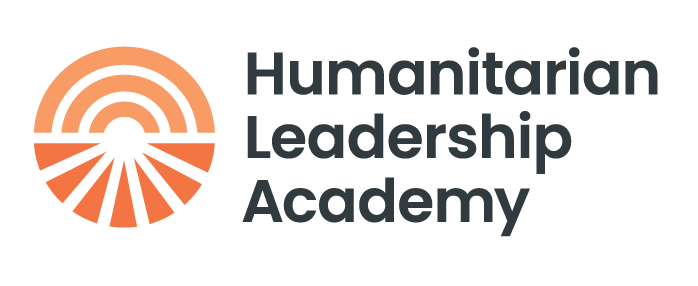
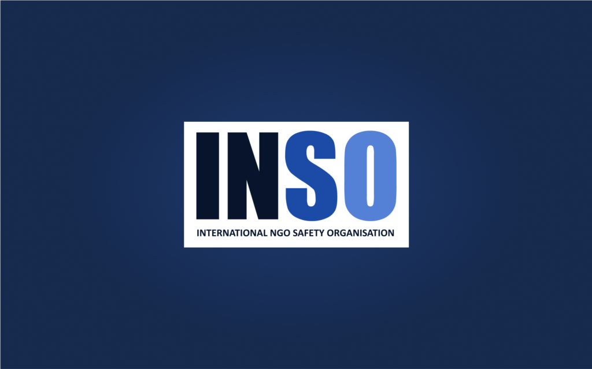

🌐 Welcome to my Profile 🚀
👨💻 Educational Attainment
- Master's Degree, Hydrogeology. University of Calabar, Calabar - Cross River State. Nigeria.
- Bachelor's Degree, Geology. University of Calabar, Calabar - Cross River State. Nigeria.
👨💻 Professional Affiliations

Member, Nigerian Mining and Geosciences Society (NMGS). Member, Nigerian Association of Hydrogeologist (NAH).
Member, Nigerian Association of Hydrogeologist (NAH). Member, Project Management for Development Professionals (Project DPro).
Member, Project Management for Development Professionals (Project DPro).
👨💻 Relevant Certifications and Trainings
- Leadership and Management in Health.
- Economic Evaluation in Global Health.

Monitoring, Evaluation, Accountability, and Learning for Development Professionals (MEAL DPro).
Humanitarian Environmental Individual Safety Training (HEIST).- Humanitarian Negotiations.
👨💻 Research & Publications
- Technical and Research Lead: The Impact of Oil Contamination in Okoro Utip and Eteo Communities, Rivers and Akwa Ibom States.
- Morphy, Morod I., Ikpang I. Nkeruewem, Romeo A. Ojong, and Godwin Amah. "Physicochemical, Bacteriological and Hydrogeochemical Assessment of Ground Water Within Uyo and Itu Areas of Akwa Ibom State, Southeastern Nigeria." Global Journal of Geological Sciences 22, no. 1 (2024): 113-124.